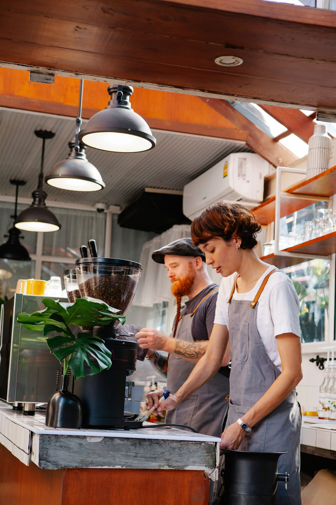

Specialkaffe midt i byen
God kaffe og hyggelige stunder
Tag en pause med kaffe af høj kvalitet i hyggelige omgivelser. Her er plads til en rolig stund, en god samtale og tid sammen.
Se menuenOm Java Café
Et lokalt fristed for kaffe, samtaler og langsomme pauser.
Java Café begyndte med en enkel idé: god kaffe skal være nem at finde, men svær at skynde sig igennem. Vi vælger bønner med karakter, rister i små partier og serverer hver kop med respekt for håndværket.
Her er plads til laptoppen, morgenmødet, en hurtig espresso ved baren eller en lang snak over croissanter. Atmosfæren er uformel, varm og kvalitetsbevidst, præcis som en moderne lokal kaffebar bør være.

Menu
Kaffe og lidt godt til.
En skarp menu med klassikere, sæsonfavoritter og bagværk fra morgenstunden.


Kaffeviden
Bliv klogere på kaffe.
Her er en kort introduktion til, hvordan kaffe udvikler smag fra bønne til kop.
Fra bønne til kop
- Ristning: Bønner varmes op, så smag og aroma udvikler sig. Lys ristning fremhæver ofte frugtige noter og syrlighed, mens mørk ristning typisk giver mere ristet smag og bitterhed.
- Formaling: Bønner males, så de passer til bryggemetoden. Espresso bruger normalt en finere maling end filterkaffe, og maling kort før brygning hjælper med at bevare aromaen.
- Brygning: Vand trækker smag ud af den malede kaffe. Vandtemperatur, bryggetid, formalingsgrad og forholdet mellem kaffe og vand påvirker resultatet.
Syrlighed betyder en frisk eller frugtig smagsoplevelse og er ikke nødvendigvis tegn på en fejl.
Tre kaffeprofiler
Arabica og robusta er kaffearter, mens lys, mellem og mørk beskriver ristningen.
| Kaffeprofil | Typisk smag | Passer til dig, der … |
|---|---|---|
| Lysristet arabica | Frisk og frugtig med tydelig syrlighed. | Kan lide lette og nuancerede smage. |
| Mellemristet arabica | Rund og balanceret med nødde- eller chokoladenoter. | Foretrækker en blødere smagsprofil. |
| Mørkristet blanding af arabica og robusta | Fyldig, ristet og mere bitter. | Kan lide en kraftig smag, også med mælk. |
Smagen varierer også med oprindelse, forarbejdning og brygning. En kraftig smag betyder ikke nødvendigvis mere koffein. Eksemplerne beskriver generelle profiler og er ikke en beskrivelse af Java Cafés aktuelle udvalg.

Hvad er Fairtrade?
Fairtrade er en certificeringsordning med økonomiske, sociale og miljømæssige krav til handel og produktion. Reglerne omfatter en Fairtrade-minimumspris som sikkerhedsnet, når markedsprisen falder, samt en ekstra Fairtrade Premium, der betales til producentorganisationen og kan investeres efter dens prioriteringer.
Læs mere om Fairtrade-standarder
Fiktivt eksempel
Ana på kaffefarmen
Ana er en ung voksen, der arbejder på en kaffefarm i Colombia. I høstsæsonen plukker hun modne kaffebær ét for ét og sorterer dem med omhu. Hun er stolt af kvaliteten i sit arbejde: Inde i hvert kaffebær ligger kaffebønnen, som egentlig er frøet, der senere kan blive til kaffe. I dette fiktive eksempel får Ana en god løn, der dækker hendes daglige behov og giver mulighed for at spare op. Hendes aftalte arbejdstid giver plads til pauser, og hun har sikkerhedsudstyr, når arbejdet kræver det.
Historien beskriver ikke Java Cafés forsyningskæde eller et dokumenteret Fairtrade-resultat.
Illustrationsfoto. Personen på billedet er ikke Ana fra det fiktive eksempel.
Hvorfor vælge os
Tre grunde til at kigge forbi.
-
01
Kaffe med omtanke
Vi arbejder med bønner, der har tydelig oprindelse, og brygger dem med ro frem for rutine.
-
02
Plads til at blive
Bløde siddepladser, gode arbejdsborde og en lyd, hvor både samtaler og fokus kan være med.
-
03
Frisk hver dag
Vi holder menuen enkel og frisk med kaffe, bagværk og små serveringer, vi selv har lyst til at spise.
Galleri
Stemningen i kopper, kroge og øjeblikke.


Kundeanmeldelser
Det siger gæsterne.
-
“Min faste pause mellem arbejde og hjem. Kaffen er altid god, og der er en rolig stemning uden at være stille.”
Sofie
-
“Deres flat white er præcis, som jeg håber på: stærk, blød og uden for meget mælk. Også virkelig venlig betjening.”
Mikkel
-
“Godt sted at sidde med laptop en formiddag. Surdejsbollen med ost er blevet lidt af en vane.”
Amina
Dit besøg
Spørgsmål om dit besøg
Hvornår har I åbent?
Se vores åbningstider under Kontakt.
Må jeg amme min baby på jeres café?
Ja, selvfølgelig. Vi har borde med lidt mere ro, hvis du ønsker det, men du er velkommen til at amme, hvor du vil.
Må jeg tage min hund med?
Ja, din stille og rolige hund er velkommen ved et bord udenfor.
Kontakt
Find os på hjørnet, hvor duften begynder.
Kom forbi til morgenkaffe, tag en kop med på farten eller skriv til os, hvis du vil høre om bordreservation til et mindre møde.
Java Café
Ristestien 14
8000 Aarhus C
Åbningstider
- Mandag-fredag
- 07.30-18.00
- Lørdag
- 08.30-17.00
- Søndag
- 09.00-16.00